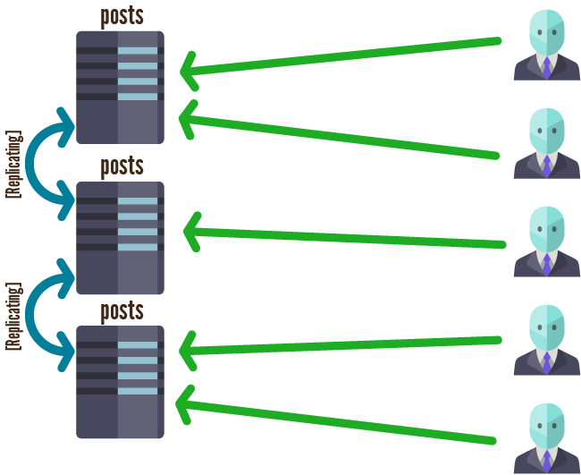
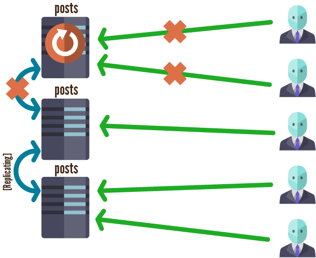
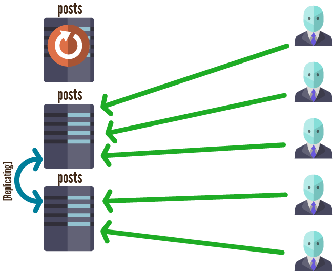
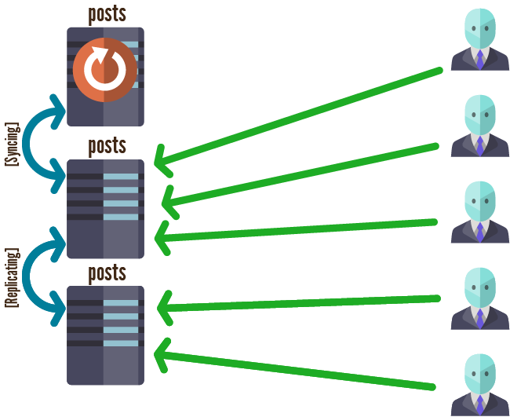
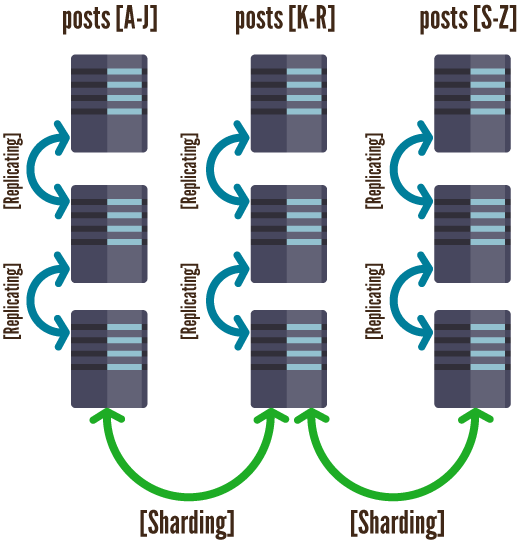

MongoDB
Introduction to sharding and replication
Created by Błażej Krysiak / Patryk Orwat / Piotr Naumczyk / Michał Rynduch / Tomek Dziopa
What's MongoDB?
MongoDB [hu·mon·gous]
is a non-relational document-oriented
data storage system with integrated DBMS that provides high perfomance, scalabilty and flexibility.

Architecture
MongoDB runs on kernel written in C++ and Google V8 JavaScript Engine, that parse code directly to processor instructions.
All data are stored in BSON format, a binary version JSON.
Document-oriented
Basic storage unit is document (SQL row) that is essentially an association array stored in special format BSON.
Documents are organised in collections (SQL table) that have no relations between each other.

Replication
- Redundancy of data
- Failover mechanisms
- Multi-DC deployment
- Zero down-time upgrades and maintenance
Main feauters of replication
- Acychronous
- Single-Primary (NOT Master-Master)
- Statement-Based AND Binary-Based
- Majority election
- Automatic failover mechanisms
- Automatic node recovery mechanisms
Working replica set
One srv is going down!
Redirecting the clients to other nodes
Syncing the data and failover
Returning back to work

Mongod
Primary daemon process for whole MongoDB system
- handles data requests
- manages data format
- performs background management operations
Amazing options
--replSet <setname>
Configures replication
--oplogSize <value>
Specifies a maximum size in megabytes for the replication operation log
By default 5% of disk size. Specifies the delay of instances syncing
Sharding
- Partitioning the data
- Auto-balancing
- Scale write throughput
- Optimize storage capacity
Simple sharding example
MongoDB has many strong points...


Has huge driver support...
*And 23 other community-supported drivers
And big companies are using it.
Thanks you for your attention
You can find the sides on my blog:
www.codefedonarts.com